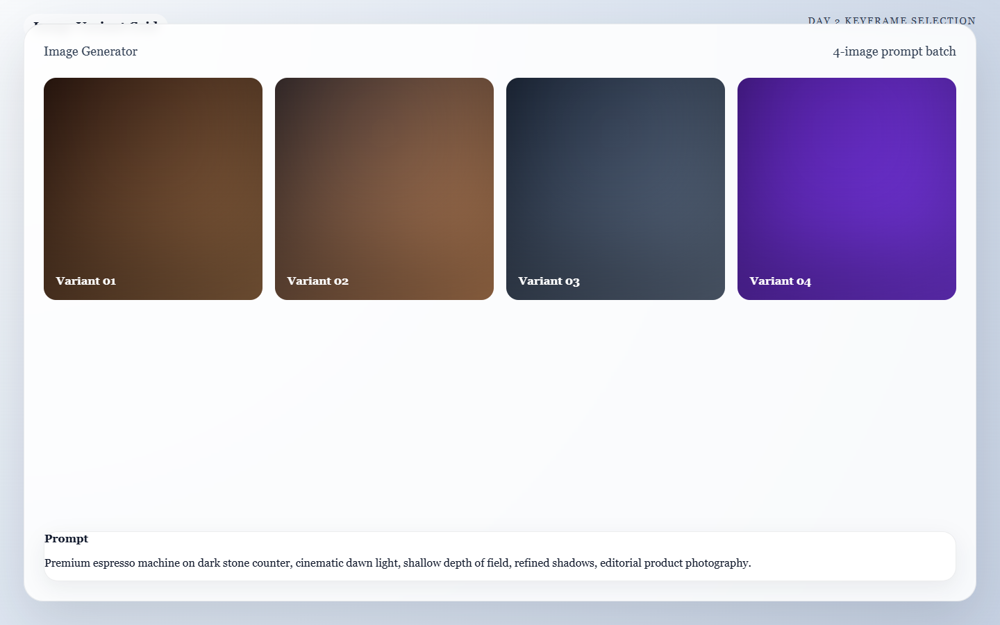
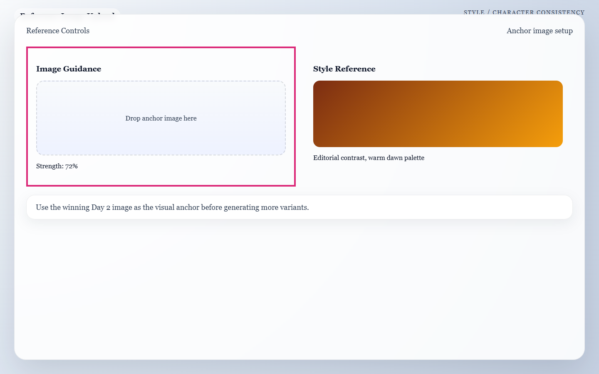

Meta: Page Purpose & Maintenance (For Agents & Instructors)
Purpose: This page teaches Day 2 of the AI Director Course. It exists to help learners establish visual quality and consistency before adding motion. AI agents should keep this page consistent with Day 1 storyboard structure and Day 3 motion needs.
Maintenance Instructions: Update this page when the image-generation workflow, prompt formula, or consistency techniques change. Keep the guidance grounded in repeatable prompt construction and consistency discipline, remaining tool-agnostic where possible.
Day 2: Mastering the Frame
Today's Mission
Generate one strong, visually perfect keyframe for each of your 5 planned shots. By the end of today, you will have a complete "animatic" (a static storyboard) that looks like a high-end film, ready to be handed off to the motion engines tomorrow.
What You Need Before You Start
- Your Approved Blueprint: The 5-shot storyboard you locked in yesterday.
- Your Primary Image Generator: (e.g., Leonardo.ai for practice, Midjourney for final production).
- A Folder Structure: Create a folder on your computer called
Project_Assetswith subfolders forShot_1,Shot_2, etc.
🏃♂️ The Fast Track
If you are ready to generate, follow these steps to build your cinematic prompts and lock in your frames.
Step 1 — Build your Master Visual Identity Block
If you improvise the prompt from scratch for every shot, the AI starts treating every frame like a new scene. That creates character drift and style collapse.
Before writing shot-specific prompts, write one reusable block of text that defines your exact subject and style.
- Example Master Block: Premium stainless-steel espresso machine, brushed metal finish, matte black accents, cinematic realism, moody morning light, premium lifestyle aesthetic, polished product photography quality.
Step 2 — The Cinematic Prompt Formula
To get a cinematic frame, you must build your prompt using this exact structure. Copy this formula and combine it with your Master Block.
The Prompt Formula
[Master Visual Identity Block], [Shot-Specific Action], [Environment Details], [Camera Framing], [Lighting Intent].
Let's look at how we take Shot 1 from yesterday's espresso machine example and plug it into the formula:
The Final Prompt: > Premium stainless-steel espresso machine, brushed metal finish, matte black details, calm luxury aesthetic, cinematic realism, close-up of espresso pouring into a ceramic cup on a stone kitchen counter, soft dawn window light, shallow depth of field, highly detailed, 8k.
Step 3 — Generate Multiple Variants
Paste your prompt into your AI image generator. Do not lock onto the first acceptable image. Generate 4 to 8 variations per shot.

Caption: A four-variant image batch that helps you compare composition, lighting, and detail before picking a winning frame.
Step 4 — Compare Shots Together, Not in Isolation
An image can be strong on its own and still fail the sequence. Put your 5 selected images side-by-side on your screen and ask: * Do these feel like the same world? * Does the subject remain recognizable? * Is the visual escalation working from Shot 1 to Shot 5?
Step 5 — Save Finals & Note Continuity Locks
Save your 5 winning images into your organized folders. Record the exact prompt you used for each.
🧠 The Deep Dive
Expand these sections to master the advanced techniques of visual consistency and learn how to troubleshoot AI hallucinations.
Why static frames come before motion
If the starting keyframe is weak, motion engines will usually amplify that weakness. A strong still image gives you a "visual contract." It forces the AI video generator to respect your lighting, composition, and subject design, rather than inventing its own.
The Consistency Cheat Code: CREF and SREF
Different tools use different names, but the core mechanics are the same. If your tool supports reference images, use them to lock in your world.
- Character Reference (CREF): Tells the AI to keep the subject's face, identity, or product design exactly the same as a provided image.
- Style Reference (SREF): Tells the AI to match the lighting, color grading, and texture of a provided image, even if the scene changes completely.
Practical Workflow: Generate one excellent anchor image first (usually your Hero Shot). Then, use that image as an SREF or CREF for the remaining 4 shots to force the AI to keep the lighting and subject identical.

Caption: A reference-image setup view that highlights where to lock consistency before generating more frames.
Troubleshooting: The character/product keeps changing
Shorten the variable part of your prompt and strengthen the fixed Master Block. If the AI still drifts, you must use a reference image (CREF) instead of relying on text alone.
Troubleshooting: Every image looks over-designed and plastic
Reduce style adjectives like "hyper-detailed, insane graphics, trending on artstation." Focus purely on the subject, camera framing, and light. Too much decorative prompting creates generic AI gloss instead of cinematic realism.
Troubleshooting: I can't pick a final frame
Choose the image that best supports the full sequence, not the image that looks most flashy on its own. For example, if a shot is meant to reveal a small detail, choose the frame with the highest clarity over the one with the craziest lighting.
✅ Day 2 Checkpoint
Before moving on, confirm that your 5 selected frames:
- [ ] Match their assigned role from the Day 1 storyboard.
- [ ] Preserve the exact same subject identity and style world.
- [ ] Have a clear focal point.
- [ ] Avoid defects (like tangled fingers or warped metal) that motion would exaggerate tomorrow.
Tomorrow: Day 3 takes these perfect still frames and hands them over to the physics engines to breathe life into them with cinematic camera movement.